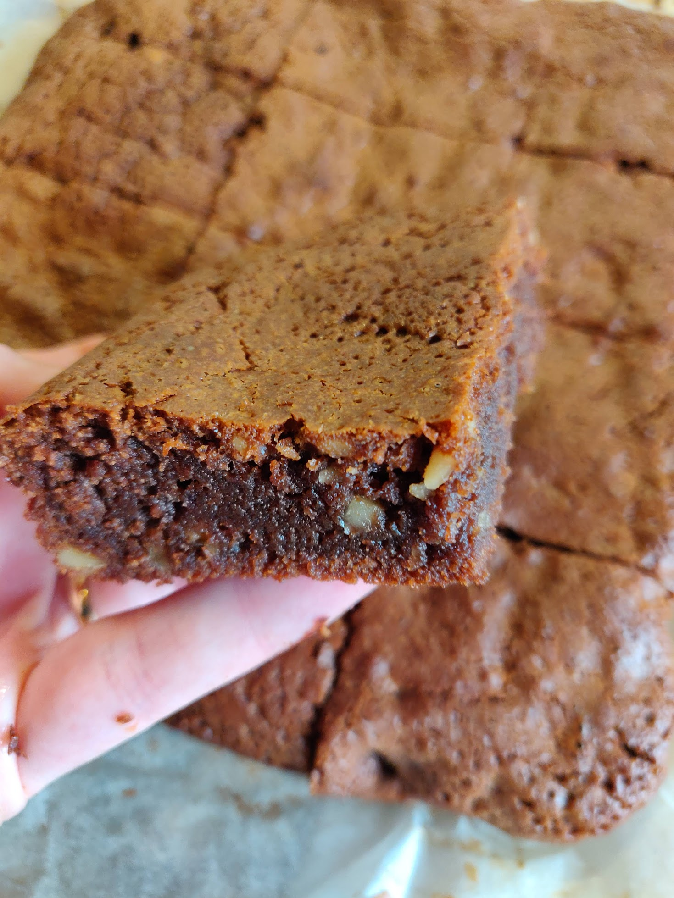

Hozzávalók:
- 185 g vaj
- 185 g étcsokoládé (min. 65%-os)
- 3 db tojás
- 150 g cukor (kristály)
- 1 ek vaníliás cukor
- 55 g finomliszt
- 55 g dió (darált)
- 1 csipet só
Elkészítés:
- Vízgőz felett összeolvasztjuk a vajat és csokoládét. Hűlni hagyjuk.
- A tojásokat a kétféle cukorral habosra keverjük.
- A lisztet elvegyítjük a dióval és a csipet sóval.
- A kihűlt csokis vajat hozzákeverejük a tojásos masszához, majd a lisztes-diós egyveleget is beleforgatjuk. Az egészet simára keverjük.
- Sütőpapírral bélelt tepsibe (egy kb. 27 x 18 x 3 cm-esbe) (enyém 25x25) simítjük a tésztát és 180 fokra előmelegített sütőben kb. 17 percig sütjük (20+ percig sütöttem). A brownie sütésekor különösen fontos, hogy sikerüljön eltalálni, mikor vesszük ki a sütőből: akkor jó, amikor a teteje már szilárd, belülről pedig sötét és ragacsos.
https://www.nosalty.hu/recept/brownie-2